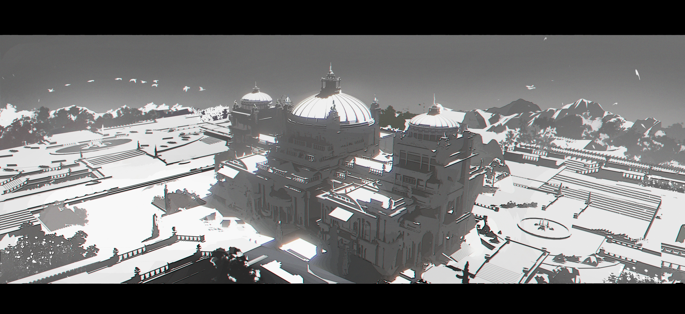

世界观：帝国
#帝国 #ABO #私设 #oc

在一次陨石撞击地球的灾难中，辐射杀死了地球超过70%的生命。剩下的人类在末世中组成联邦政府，集中发展科技，后抛弃旧地球以后逐渐发展往其他星球定居。
在这段末日一般的时期，人类逐渐演化出了Alpha、Beta、Omega三种性别，生育功能不再局限于女性。甚至在Alpha和Omega之中还产生有“精神力”的个体，这种能力曾经只存在于理论中，人类在这个基础上制造出了以精神力操控的高维战斗机器——机甲，用以保卫、对抗其他的外星文明。
后续这种能力越来越普遍，几乎所有α/ω都有精神力。联邦给他们分为五个等级——S/A/B/C/D。随着人口急速扩张，陆续又发现S级中还有极少数大幅高于阈值的人（概率约65万分之一），为此又新增了SS级，此标准一直沿用至现在。
至今约1200年前，人类领星被一种未知的高等文明袭击了，因为各种已知线索都指向这个生物的习性与我们生活中的虫类相似，给其起名为“虫族”。
当时的机甲也不足以对抗这些外来者，旧联邦对这种高维生物束手无策。
此次袭击人类损失约12%的星域和8%的人口，在此之后人类再未见过虫族。
生活模式逐渐稳定，联邦中开始有少数政治体生出并吞其他政治体的野心，开始了长达百年的人类战争，旧联邦也逐渐瓦解。
最后以尤里奥家族统领的政治体赢得这场战争的胜利而告终，统一了人类政权，开创了新帝国。
基本信息
领星域：3.12亿宙里≈约3300光年，宜居星球约1581万颗（1宙里=10000万公里）
总人口：约9.36京（平均59.25亿）
皇室：尤里奥
象征：百合
α/β/ω性别
Alpha
Alpha通常处于权力顶端。约占据总人口数的14%~17%。
Alpha体型更大、更具攻击性、占有欲强，并且有极强生殖力。他们能够使Beta和Omega怀孕。
当Alpha遇到处于发情期的Omega时，通常难以控制自己的欲望，他们被一种生物本能驱使着与Omega结合。Alpha在性兴奋时yj会形成结。
【结】结是指Alpha的yj根部形成一个膨胀的结，使Alpha能够锁定Omega，无法拔出。
Beta
Beta基本上和你所知的普通人一样。约占据总人口数的68%~76%。
性格稳定且闻不到信息素，普遍承担社会基础工作者的角色。
Beta腺体退化，不具备信息素分泌能力，无周期性发情期，也无法感知Alpha和Omega释放的信息素。
他们的生殖腔并未完全被打开，因此受孕率低于Omega群体。
Omega
处境很两极，等级高的Omega社会地位高，反之则在权力最底端。约占据总人口数的10%~12%。
Omega体型较小，攻击性较低，且可以被受孕。一旦与Alpha发生x行为，怀孕的几率很高。Omega有着繁衍后代的生物本能，会进入发情期，在此期间几乎无法控制自己的行为。
信息素
Alpha和Omega的腺体可以分泌和感知信息素，体液和腺体中信息素的浓度最高。
一般來说Alpha可以通过用牙齿咬破腺体來向Omega身上注射自己的信息素，使兩个人的信息素融合，完成标记。在Omega被标记後，信息素會摻入Alpha的味道。
Beta腺体退化，不具备信息素分泌能力，无周期性发情期，也无法感知Alpha和Omega释放的信息素。
标记
标记分为两种：临时标记和永久标记。
临时标记是通过Alpha在Omega的颈部腺体中注入自己的信息素来形成的。
永久标记则是通过Alpha在Omega的生殖腔内成结来实现的，这种标记是终身有效的。
易感期・发情期
精神力
精神力是一种靠意念具象化操控的不可视能力，也是机甲战斗力的重要来源之一。精神力越强，与机甲的同步率就越高，能发挥出越强大的机动性和战斗力。
分为六个等级，从高到低分别为SS/S/A/B/C/D。
SS级
仅占α/ω总人口的2.65兆分之一，且绝大多数是Alpha。
（星球平均0.00059人/星球总人口占0.000000001%/总人口占9000人）
实际上处于青壮年的人数约只有5200人。
S级
约占α/ω总人口的400万分之一。
（星球平均392人/星球总人口占0.000331%/总人口占62亿人）
A级
约占α/ω总人口的1.1%。
（星球平均1727万人/星球总人口占0.29%/总人口占273兆人）
B级
约占α/ω总人口的18.5%。
（星球平均2.9亿人/星球总人口占4.9%/总人口占4585兆人）
C级
约占α/ω总人口的31.1%。
D级
约占α/ω总人口的49.3%。
家族
五大军校
【阿克罗波利斯中央首席军校】
整个帝国最顶尖的军校，位于首都星。
【法伊斯特军校】
东境的第一军校。
【摩戈军校】
西境的第一军校。
【艾因萨乌斯军校】
南境的第一军校。
【诺森军校】
北境的第一军校。